XOOPS Cube Legacy のインストール方法
はじめに
XOOPS Cube Legacy のインストールを始める前に、サーバ上で稼動・運用するソフトウエアのインストールや管理についての知識を習得されるよう、おすすめします。 人生と同じで、簡単な方法や答えはありません。 XOOPS Cube Legacyはサーバベースのソフトウエアで、皆さんがよくご存知のデスクトップアプリケーションほど簡単にはインストールできませんので、 以下で示すソフトウエアのインストールや設定を習得してください。 この機会にCGIスクリプトや、HTTPサーバの設定に詳しくなってしまいましょう。 私たちに寄せられる質問の８０％は、サーバ設定の間違いや、サーバソフトウエア同士の通信衝突に原因があります。 どんなサーバでも、まったく同じように構成されているものは１つもなく、 自分の環境に合わせて適切に構成しなければなりません。
はじめてXOOPS Cubeをインストールする場合、 少なくとも以下のソフトウエアをサーバコンピュータにインストールしておく必要があります。
インストールを始める前に次の準備をしてください
- HTTPサーバ、PHP、データベースサーバを適切にセットアップする。
- XOOPS Cube Legacy をインストールするデータベースを作成する。
（もし、作成する権限がない場合は、サーバ管理者かサーバホスティング会社に依頼してください。） - 上記のデータベースにアクセスできる、データベースサーバのユーザアカウントを準備する。
- XOOPS Cube Legacy のファイルをサーバにアップロードし、「uploads/」、「cache/」、「templates_c/」ディレクトリ、および「mainfile.php」ファイルのパーミッションをPHPから書き込み可能に設定する。
- ブラウザのクッキーとJavaScriptを有効にする。
ローカル環境へのインストール
開発作業やテストのために XOOPS Cube Legacy をローカル環境で実行させる場合には、 これまでに述べた通りにサーバソフトウエアとその設定が準備できているか確認してください。 次に、XOOPS Cube Legacy のパッケージに含まれる「html」ディレクトリ内の全てのディレクトリやファイルを、 コンピュータのドキュメントルート以下にコピーします。 コピー後、ブラウザのアドレスに「http://あなたのＵＲＬ」（または「http://127.0.0.1」)と入力すると、 自動的にインストールウィザードが開始されます。
インターネット上のサーバへのインストール
インターネットに接続されたサーバにインストールするには、まず XOOPS Cube Legacy ファイルをローカルな自分のコンピュータで解凍します。 もし、サーバへの telnetか SSHアクセスを許可されているなら、サーバで解凍してもかまいません。 解凍が済んだらXOOPS Cubeの「html」内にあるすべてのディレクトリやファイルを、 ホストコンピュータのドキュメントルートに（FTPを使って、または、telnetかSSHを使って）コピー・移動します。 （もし、ドキュメントルートがわからない場合は、サーバ管理者か、利用しているサーバホスティング会社に問い合わせてください）。 転送後、ブラウザのアドレスに「http://あなたのサイトのＵＲＬ」と入力すると、インストールウィザードが開始されます。 （このとき、必ず最終的にユーザがアクセスするＵＲＬでアクセスしてください。 IPアドレス等でアクセスするとうまくいきません。
インストール ステップ・バイ・ステップ
これまでに述べた通りに作業すると、インストールウィザード画面が表示されます。 最初のウィザード画面ではインストーラの言語表示の種類を選択します。 日本語表示にするには、リストボックスから「japanese」を選択して、「Next」ボタンをクリックします。

「XOOPS Cube Legacy 2.1 インストールウィザードへようこそ」画面が表示されますので、内容をよく読み「次へ」ボタンをクリックして進みます。 （特に準備をもう一度よく読んで、インストールの準備ができているかどうか確認してください。）
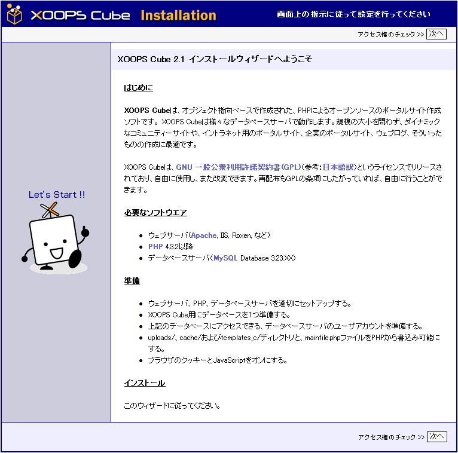
次のウィザード画面には、パーミッションが正しく設定されているかどうかの確認結果が表示されます。 先頭に緑色の信号が付いたディレクトリとファイルは、パーミッションが正しく設定されているものです。 先頭に赤色の信号が付いたものはパーミッションが正しく設定されていないので、 パーミッションをPHPから書き込み可能へ設定し直してください。 （よく分からない場合、通常chmod 777として問題ありません。） Win32環境でインストールを実行している場合には通常パーミッションを設定する必要はありませんので、 すべてのディレクトリとファイルに緑色の信号が表示されるはずです。 Unix環境でインストールを実行している場合には、各ディレクトリとファイルに正しいパーミッションを設定する必要があります。 画面のようにすべてが緑色の信号で表示されたら、「次へ」ボタンをクリックして進みます。
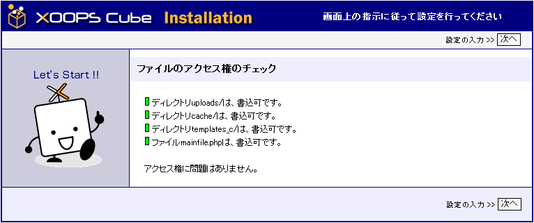
次のウィザード画面には、XOOPS CubeをインストールするディレクトリやブラウザでアクセスするためのURLなど、 「データベース、およびパス・URLの設定」の入力フォームが表示されます。
- 「データベースサーバ」には、使用するデータベースサーバの種類を指定します。
- 「データベースサーバのホスト名」には、データベースサーバのホスト名を入力します。
ほとんどの場合、localhostという名前ですが、 必ずサイト管理者やサーバのホスティング会社に問い合わせて、正しいデータベースホスト名を入力します。 - 「データベースユーザ名」と「データベースパスワード」には、
XOOPS Cubeがデータベースに接続する際に使用するユーザ名とパスワードを入力します。
（テスト用のローカル環境以外では、セキュリティー上rootユーザとすべきではありません。 また、ホスティングサービスを利用の場合は、ホスティング会社からあなたが使用できるユーザ名が知らされているはずです。） - 「データベース名」には、XOOPS Cube Legacy で使うデータベースの名前を入力します。
上記のデータベースユーザは、このデータベースのアクセス・操作権限を持つ必要があります。 ホスティングサービスを利用の場合は、ホスティング会社から使用できるデータベース名が指定されている場合があります。 - 「テーブル接頭語」にはXOOPS Cubeが使うテーブル名の先頭に付ける接頭語を入力します。
テーブル接頭語は、ほかのソフトウエアが使用するテーブル名との重複をさけるためのものです。 あまり長いものにしないようにすることが望ましいです。 - 「データベースへ持続的接続」は、よく分からない場合は、初期設定のまま「いいえ」を選択します。
- 「XOOPS Cubeへのパス」には、ホストコンピュータにおける、XOOPS Cubeまでのフルパスを入力します。
- 「XOOPS CubeへのURL」には、ブラウザでXOOPS CubeにアクセスするためのURLを入力します。
入力フォームには自動で認識された値が入っていますが、必ず正しいかどうか確認してください。 不明な場合は、サーバ管理者やホスティング会社に問い合わせて、正しく入力してください。 また、Windowsではパスの区切り記号に「￥」を使いますが、ここでは「/」を使ってください。 また、最後へ「.../htdocs/」のように「/」を入力しないでください。
すべての項目を入力したら「次へ」ボタンをクリックして進みます。
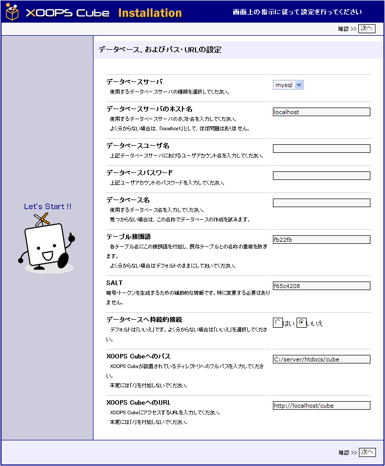
次のウィザード画面には、前のフォームで入力した「データベース、およびパス・URLの設定」の内容が一覧形式で表示されます。 インストールが失敗する原因のほとんどは、設定内容を注意深く確認していないことによるものです。 もし、間違っていたら「戻る」ボタンをクリックして入力をやり直します。 一覧が正しければ「次へ」ボタンをクリックして進みます。
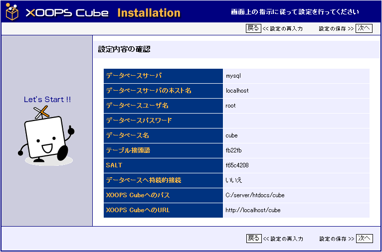
入力した「データベース、およびパス・URLの設定」の内容がXOOPS Cubeの設定ファイル「mainfile.php」に書き込まれ、 次のウィザード画面に書き込み処理の結果が表示されます。 先頭に緑色の信号が付いた書き込み処理は正常に実行できています。 すべてが正常に書き込み処理できたことを確認したら、「次へ」ボタンをクリックして進みます。
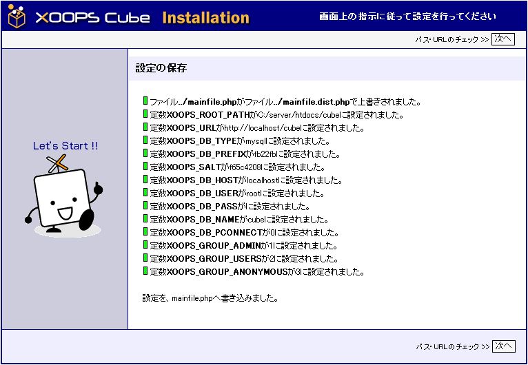
mainfile.phpに書き込まれたXOOPS CubeディレクトリへのパスとXOOPS CubeへのURLがウィザードによって検証され、 次のウィザード画面にその検証結果が表示されます。 先頭に緑色の信号が付いた検証結果は正常なので、「次へ」ボタンをクリックして進みます。 先頭に赤色の信号が付いた場合は、インストーラが検出したパスとＵＲＬが、設定されたものと尾異なっています。 上記で設定した項目が正しいか確認してください。 間違っていた場合は、インストールをはじめからやり直してください。 （サーバの設定によっては、まれに、設定が正しくてもエラーとなる場合があります。その際は、無視して次に進んでください。） 「次へ」ボタンをクリックして進みます。
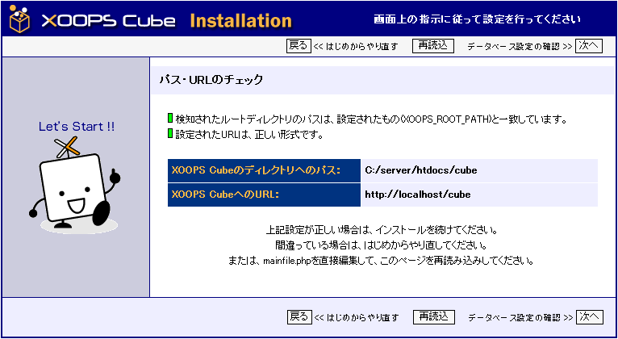
次のウィザード画面には、「データベース、およびパス・URLの設定」でフォームに入力したデータベースの内容が一覧で表示されます。 設定が正しければ「次へ」ボタンをクリックして進みます。 間違っている場合は、インストールをはじめからやり直してください。
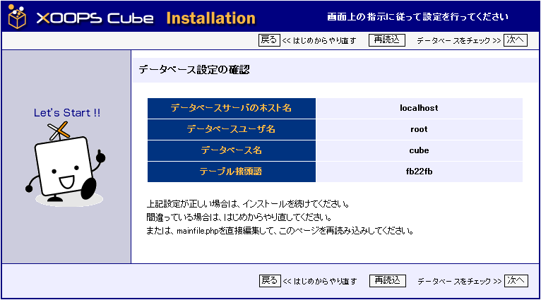
次のウィザード画面には、データベースへの接続と「データベース、およびパス・URLの設定」で入力したデータベースが存在するかどうかの確認画面が表示されます。 先頭に青色の信号が付いた確認に問題はありません。 「次へ」ボタンをクリックして進みます。 「データベースサーバへ...」の先頭に赤色の信号がある場合は、 「データベース、およびパス・URLの設定」で入力したデータベースユーザー名・パスワードまたはデータベース名が間違っているか、 PHP・データベースサーバの設定が間違っています。 インストールをはじめからやり直してください。

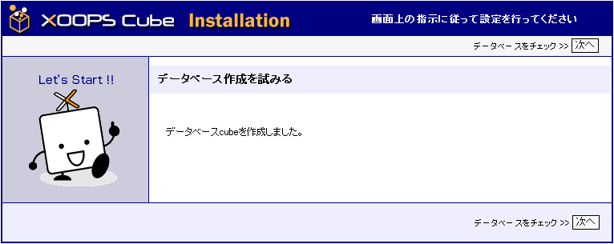
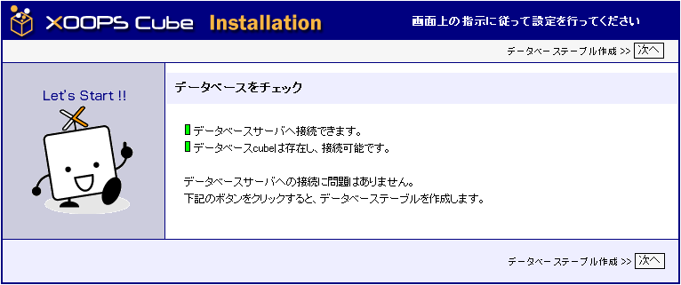
データベースにXOOPS Cubeのテーブルが作成され、次のウィザード画面に作成結果が一覧表示されます。 先頭に緑色の付いたテーブルは正常に作成されています。 先頭に赤色の付いたテーブルは作成に失敗しています。 すべてのテーブルが正しく作成できていたら、「次へ」ボタンをクリックして進みます。
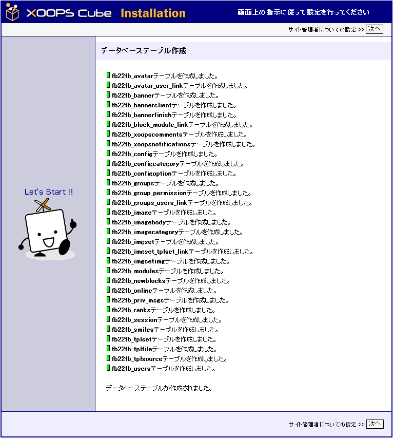
次のウィザード画面には、管理者ユーザを作成するためのフォームが表示されます。 XOOPS Cubeのインストールが完了したら、この管理者ユーザ名でログインし、XOOPS Cubeをセットアップします。 ユーザ名とパスワードは、忘れないようにしてください。 また、「管理者ユーザー名」「パスワード」とも、半角英数字とし、スペースを含めないことを推奨します。 フォームのすべてに入力が済んだら「次へ」ボタンをクリックして進みます。
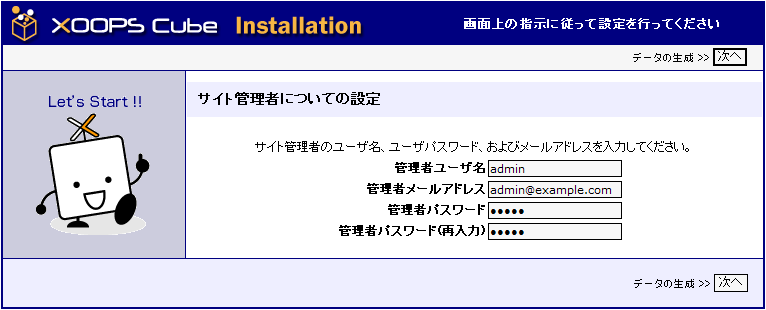
XOOPS Cubeで使うアイコンや初期データが各テーブルに作成され、次のウィザード画面にその結果が表示されます。 すべてのデータの作成や書き込みの先頭に緑色の信号が付いていることを確認し、 「次へ」ボタンをクリックしてインストールを完了します。
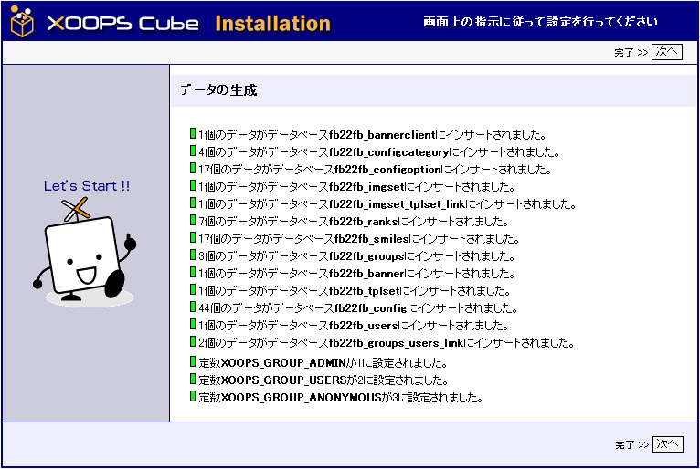
STEP1 インストール成功！
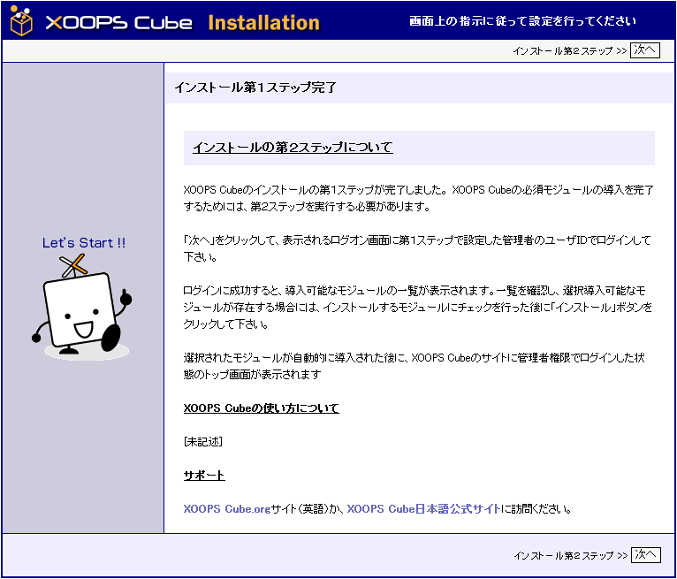
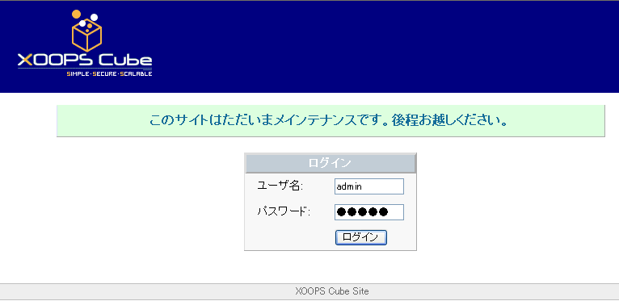

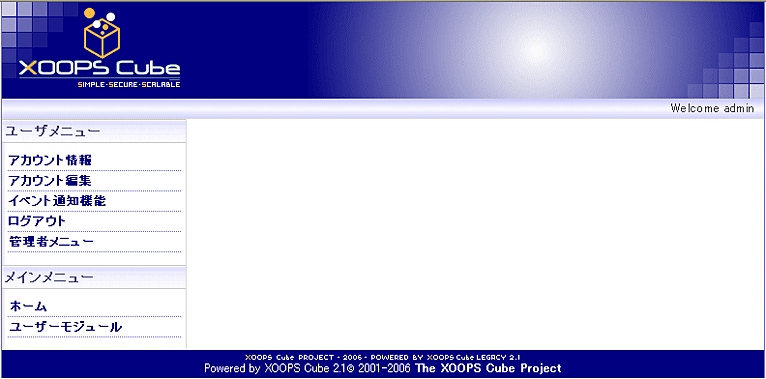
お疲れさまでした、これでXOOPS Cubeのインストール作業はすべて完了しました。 サイトに貼られた「ここ」リンクをクリックして、インストールしたXOOPS Cubeのサイトにアクセスし、この管理者ユーザ名でログインし、洗練されたポータルサイトを構築してください。 もし、このガイドに従ってもインストールできない場合は XOOPS Cubeサイトにあるマニュアル・FAQ で調べたり、 XOOPS Cube日本語サイトのフォーラムで開発チームのメンバーやたくさんのXOOPS Cubeユーザーに敬意を払って質問すれば、 きっとインストールを成功させる方法を見つけられることでしょう。